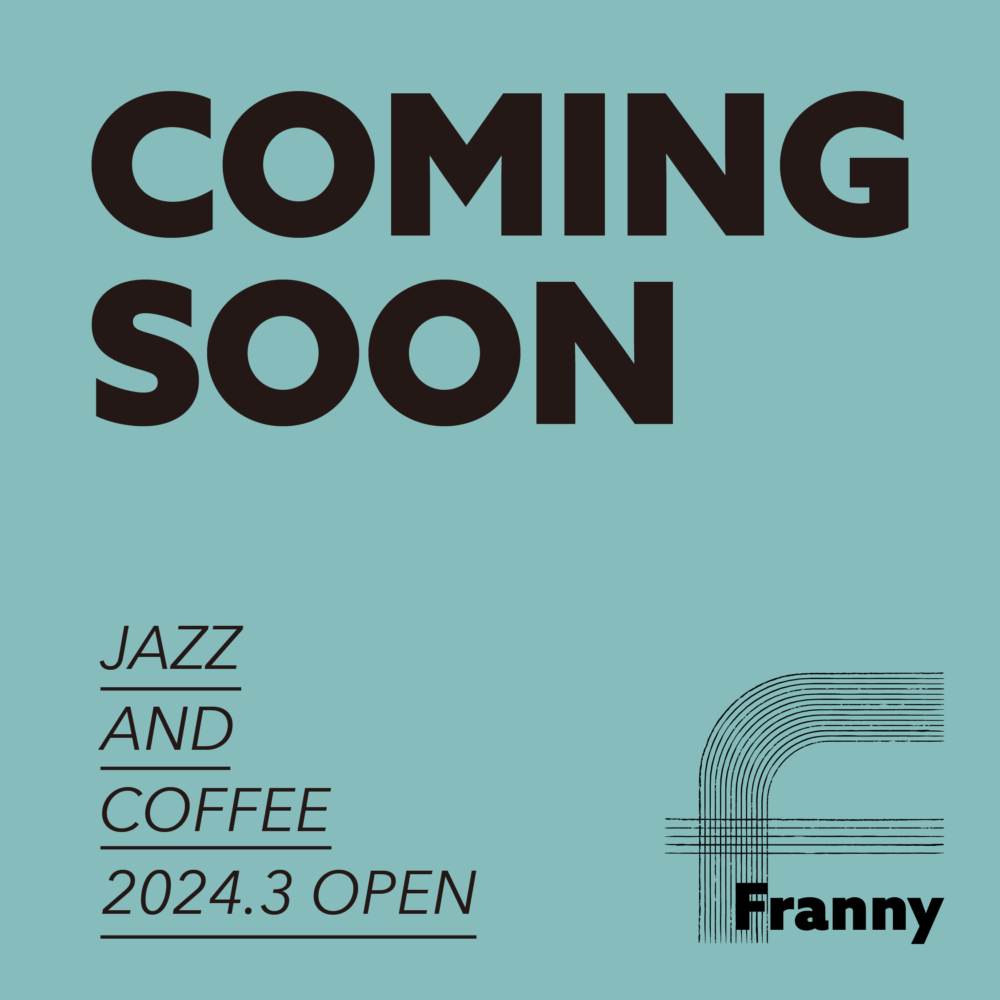
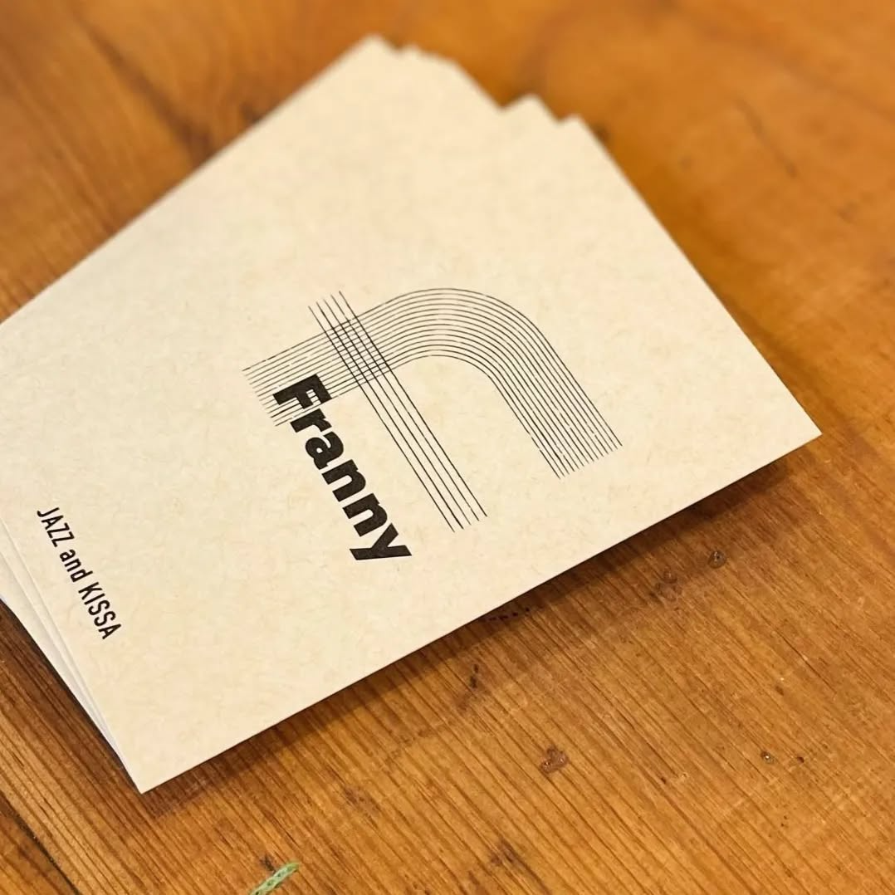
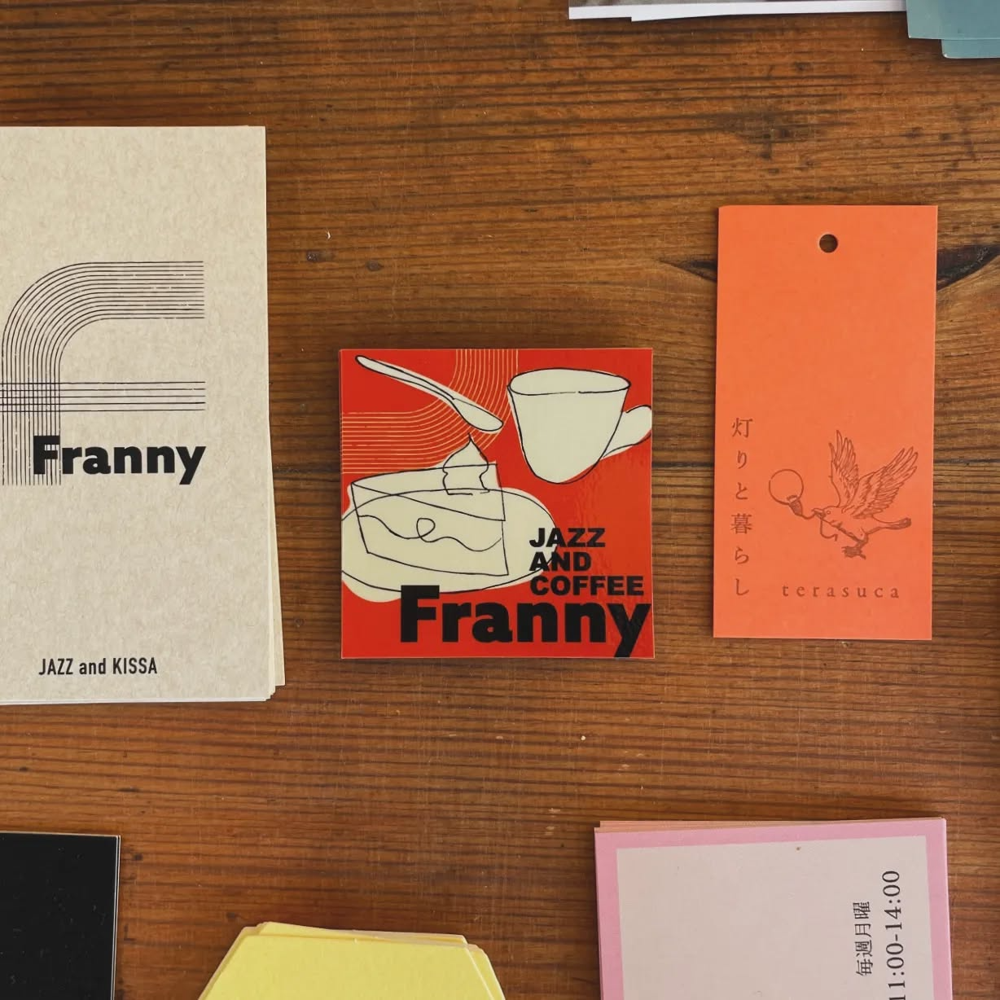

WORKS
ジャズと喫茶 Franny
WEB
DTP
illust
ロゴデザイン/instagram告知画像/ショップカード/フライヤー/ステッカー
五線譜と喫茶店のテーブルのコーナーをイメージしたロゴを制作しました。
開店後にステッカーの依頼を受け、お店の雰囲気に合うようモチーフやカラーの相談を重ね、ラフな雰囲気のステッカーを制作しました。
初イベントのフライヤー制作も任せていただきました。爽やかな色合いと謎めいたイラストで目を引くようにデザインしました。
2022-
  